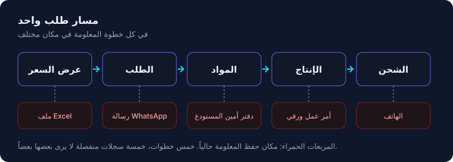
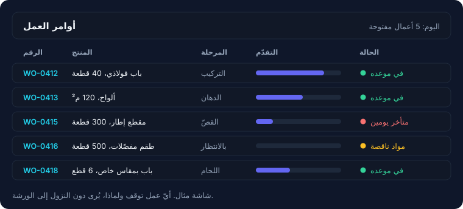
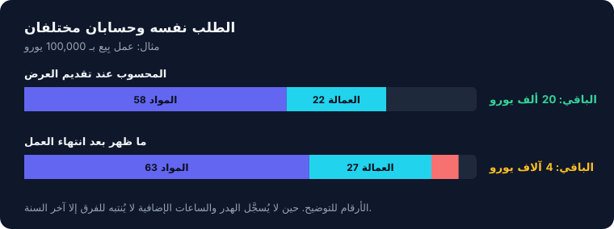

متى يصبح برنامج إدارة الإنتاج ضرورياً؟
معظم الشركات المنتجة تبدأ بـ Excel وأوامر عمل ورقية ومجموعة WhatsApp. حين تكون الطلبات خمسة أو عشرة لا عيب في هذا الترتيب، والجميع يعرف أين كل شيء. وحين يصل عدد الطلبات إلى ثلاثين أو أربعين يبدأ الترتيب نفسه بتضييع قليل من المال كل يوم، ولا أحد يجمع هذه الخسارة ويضعها أمامكم.

مشاهد مألوفة في الورشة
في منشآت الإنتاج التي نزورها نرى المشاهد نفسها مرة بعد مرة. العميل يتصل ويسأل عن طلبه، فيقول الزميل في المبيعات «أرى وأعود إليك» وينزل إلى الورشة. مفصّلات الأبواب التي ستُشحن الخميس نفدت يوم الثلاثاء ولم ينتبه أحد. القطع التي خرجت معيبة من القصّ وُضعت في زاوية، لكن عددها لم يُكتب في أي مكان.
والخطة يعرفها في العادة شخص واحد، غالباً مدير الإنتاج أو أقدم المعلّمين. حين يأخذ ذلك الشخص إجازة أسبوعاً يمشي العمل لكنه يتباطأ، لأنه لا يوجد غيره من يقرّر أيّ عمل يُقدَّم.
وهناك مسألة السعر. حين تسألون «كم نربح من هذا الباب؟» يكون الجواب في معظم الشركات سعر السنة الماضية مع زيادة فوقه. البيانات اللازمة لحساب التكلفة الحقيقية، أي كم ساعة عمل صُرفت وكم من المواد رُمي، لم تُجمع أبداً.

من يدفع فاتورة ذلك؟
لا تُدخل أيٌّ من هذه المشاكل الشركة في ضيق بمفردها. الخسارة تتراكم حين تحصل كلها معاً.
التسليم المتأخر
عن الطلب الذي يذهب متأخراً تدفعون غرامة أحياناً وتعطون خصماً أحياناً. والخسارة الأكبر تأتي لاحقاً: العميل يعطي عمله التالي لشركة أخرى تلتزم بالموعد الذي تعطيه، ولا يقول لكم ذلك.
المال النائم في المستودع
حين لا يُعرف أيّ مادة ستلزم ومتى وكم، تُشترى المواد بالحدس. والنتيجة أن في المستودع صاجاً يكفي ستة أشهر، والبرغي اللازم لعمل الغد غير موجود. يتوقف الخط، ويُشترى البرغي من أول محل خردوات في المدينة دون مساومة.
الهدر الذي لا يُكتب
إذا كانت القطعة التي تذهب إلى الخردة لا تُسجَّل، فلن تعرفوا على أيّ آلة أو في أيّ وردية المشكلة. ترون آخر الشهر أن المواد نقصت ولا تجدون السبب.
أن تُسألوا عن كل شيء
لأن المعلومة ليست في نظام، يأتي أصغر قرار إلى صاحب الشركة أو المدير. فتكبر الشركة بقدر ما يستطيع ذلك الشخص أو الشخصان أن يُدخلا في يوم واحد.
ما فائدة البرنامج هنا؟
ما نسمّيه برنامج إدارة الإنتاج هو ترتيب للتسجيل يجمع المعلومات المذكورة أعلاه في مكان واحد. تتغيّر علامته وشاشته، لكن ما يفعله هو نفسه تقريباً.
حين يُوافَق على الطلب يحوّله النظام إلى أمر عمل. وفي أمر العمل مكتوب كم سيُصرف من أيّ مادة، وبأيّ عمليات سيمرّ وبأيّ ترتيب، ومتى سيُسلَّم. هذه المعلومة تُدخَل مرة واحدة، ولا تُعاد كتابتها بعد ذلك على ورقة أو في رسالة.
حين يبدأ العامل العمل وحين ينهيه يُسجَّل ذلك من اللوح أو من قارئ الباركود. كم قطعة خرجت، كم منها كان معيباً، لماذا توقفت الآلة، كل ذلك يدخل إلى النظام في لحظته. ولا حاجة لأن يجمع أحدهم النماذج مساءً وينقلها إلى Excel.

ولأن أوامر العمل المفتوحة معروفة تخرج الحاجة من المواد تلقائياً. النظام يُظهر قبل أسبوع أن المفصّلات ستنفد يوم الثلاثاء، والمشتريات تطلب بحسب ذلك.
وفي التخطيط يظهر على شاشة واحدة أيّ آلة وأيّ فريق مشغول في أيّ يوم. وحين يأتي طلب جديد تعطون موعد التسليم بالنظر إلى هذه الشاشة.
وأخيراً التكلفة. لأن المواد المصروفة والوقت المنقضي والهدر تُقيَّد على أمر العمل ترون كم كلّفكم كل طلب. المثال التالي قد يبدو مبالغاً فيه، لكن فروقاً بهذا الحجم تظهر في الشركات التي لا يُسجَّل فيها الهدر والساعات الإضافية أبداً.

«عملنا مختلف ولا يتّسع له برنامج»
نسمع هذا في كل لقاء تقريباً، وليس اعتراضاً بلا وجه حق. في الشركة التي تنتج حسب الطلب كل عمل يختلف عن الآخر. وفي الإنتاج الكمّي الهمّ الأساسي هو السرعة. وفي الورشة التي تعمل بالتشغيل لحساب الغير المواد ملك العميل، وحساب المخزون يُمسَك بطريقة مختلفة تماماً. وحين تأخذون باقة جاهزة وتركّبونها دون أي تعديل يصبح النظام غير مستخدَم بسبب هذه الفروق.
لذلك لا نبدأ نحن من البرنامج. نرسم أولاً كيف يتقدّم الطلب في الشركة، ثم نبني النظام بحسب ذلك المسار. وإذا اضطر العاملون إلى تغيير طريقة عملهم لأن البرنامج يريد ذلك، فهناك شيء خطأ في التركيب.
متى يبدأ Excel بعدم الكفاية؟
ورشة من ثلاثة أشخاص لا تحتاج برنامج إنتاج من اليوم الأول. وبحسب ما رأينا لا يستطيع Excel حمل العمل حين تبدأ إحدى هذه الحالات:
- إذا تجاوز عدد الأعمال الجارية في الوقت نفسه ما يستطيع شخص واحد حفظه في ذهنه.
- إذا كان المنتج يمرّ بعدة مراحل وينتظر بين المراحل.
- إذا كنتم لا تعرفون كم طلباً ذهب متأخراً الشهر الماضي.
- إذا كان العمل يتوقف بضع مرات في الشهر بسبب نقص المواد.
- إذا كانت وردية ثانية أو ورشة ثانية أو مجموعة منتجات جديدة مطروحة.
أيّ برنامج؟
الخيارات كثيرة: أنظمة ERP واسعة النطاق، وحلول MES تنظر إلى أرض الإنتاج فقط، وباقات خاصة بقطاعات معيّنة، وتطبيقات تُكتب خصيصاً للشركة. وأيّها المناسب يتوقف على حجم الشركة وما تنتجه.
نحن لا نحاول بيع منتج بعينه. في بعض الشركات ركّبنا ERP مكيَّفاً، وفي بعضها كتبنا تطبيقاً بسيطاً خاصاً بالورشة. وتجربتنا تقول: نظام غالٍ لا يناسب الشركة أقلّ نفعاً من نظام رخيص رُتّب جيداً.
من أين نبدأ؟
كخطوة أولى تتبّعوا طلباً واحداً من أوله إلى آخره. أين كُتب عرض السعر، كيف أُبلغت الورشة بالطلب، كيف طُلبت المواد، كيف أُعلم بالشحن؟ دوّنوا كل نقطة انتقلت فيها المعلومة إلى ورقة أو رسالة أو ذاكرة أحدهم. في معظم الشركات تبلغ هذه القائمة صفحة.
ثم اختاروا من القائمة البند الواحد الأكثر إيلاماً لكم. وهو في العادة إما متابعة أوامر العمل أو الحاجة من المواد. المشاريع التي تحاول إصلاح كل شيء في الوقت نفسه تتوقف في منتصف الطريق.
جرّبوا الموضوع الذي اخترتموه أولاً على خط واحد أو مجموعة منتجات واحدة. وبعد أن يبدأ الفريق بالثقة بالنظام تضيفون التخطيط والتكلفة والجودة بالتتابع.
أسئلة شائعة
هل هو لازم لورشة صغيرة أيضاً؟
حتى في ورشة من خمسة أشخاص ينفع تنظيم متابعة الطلبات والمواد. لا يلزم لهذا الحجم نظام كبير، ويكفي ترتيب بسيط مبني بحسب العمل.
هل يستخدمه المعلّمون والعمّال على الآلات؟
يستخدمونه إذا كانت الشاشة بسيطة. المطلوب من العامل غالباً لمستان: ابدأ العمل، أنهِ العمل. وفي الأنظمة التي لا تُستخدم يكون قد أُضيف عمل على من في الورشة دون أن يُعطى بالمقابل شيئاً يسهّل عمله.
كم يستغرق التركيب؟
بحسب النطاق. تشغيل متابعة أوامر العمل وحدها يأخذ بضعة أسابيع. والنظام الذي يشمل التخطيط والتكلفة والجودة أيضاً يصل إلى بضعة أشهر. نحن نفضّل التقدّم مرحلة مرحلة لتظهر أول فائدة مبكراً.
هل يعمل مع برنامج المحاسبة الموجود عندنا؟
في معظم الحالات نعم. يمكن تركيب نظام الإنتاج بحيث ينقل البيانات إلى برنامج المحاسبة الذي تستخدمونه. لا يلزم أن تغيّروا برنامج المحاسبة.
خدماتنا ذات الصلة: نظام ERP ومتابعة الإنتاج للشركات الصناعية، حلول ERP للشركات الصغيرة والمتوسطة، دراسة حالة متابعة إنتاج الأبنية مسبقة الصنع.
كم من طاقة آلاتك تستخدم فعلاً؟
احسب OEE من الوقت المخطط والتوقفات والكمية المنتجة، واعرف من أين تأتي معظم الخسارة.
افتح الحاسبةقالب خطة الإنتاج والطاقة
الطاقة اليومية لكل آلة، ويوم انتهاء الطلبات، والأعمال التي ستفوت موعد التسليم. قالب Excel مجاني.
شاهد القوالب